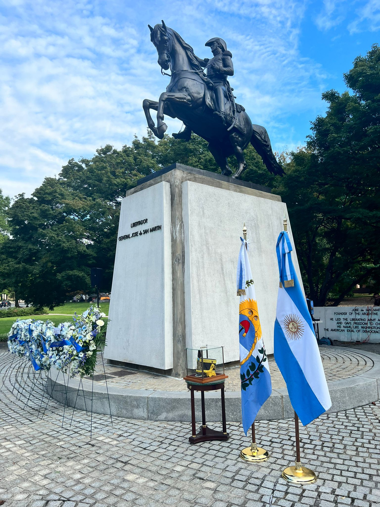
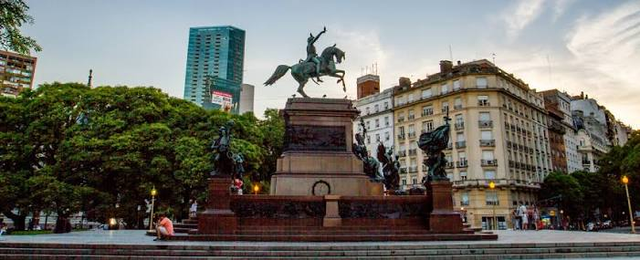

Efemérides y fechas patrias relacionadas
Las efemérides permiten recordar acontecimientos importantes de la vida de José de San Martín y de la historia argentina y americana. San Martín nació el 25 de febrero de 1778 en Yapeyú, Corrientes. El 16 de marzo de 1812 recibió la autorización para organizar el Regimiento de Granaderos a Caballo. El 3 de febrero de 1813 obtuvo una importante victoria en el Combate de San Lorenzo.
En 1814, fue nombrado gobernador de Cuyo y comenzó a preparar el Ejército de los Andes. En 1817 realizó el Cruce de los Andes y obtuvo la victoria en la Batalla de Chacabuco. El 5 de abril de 1818, las fuerzas patriotas vencieron en la Batalla de Maipú, consolidando la independencia de Chile.
El 28 de julio de 1821, San Martín proclamó la Independencia del Perú en Lima. En 1822 se reunió con Simón Bolívar en Guayaquil. Finalmente, el 17 de agosto de 1850, San Martín falleció en Boulogne-sur-Mer, Francia. Por este motivo, en Argentina el 17 de agosto se conmemora el Paso a la Inmortalidad del General José de San Martín.
Lugares históricos relacionados con San Martín
Yapeyú, Corrientes
Es el lugar donde nació San Martín. Allí se encuentra el Templete Histórico Sanmartiniano, construido sobre los restos de la casa donde nació y vivió durante sus primeros años.
San Lorenzo, Santa Fe
Es el lugar donde ocurrió el Combate de San Lorenzo, el 3 de febrero de 1813. Allí se encuentra el Complejo Museológico San Lorenzo, dedicado a preservar la historia de este acontecimiento.
Mendoza
Fue fundamental para San Martín porque allí organizó el Ejército de los Andes. Entre los lugares relacionados con su presencia se encuentran El Plumerillo, la Alameda, la Casa de San Martín y el Memorial de la Bandera.
Buenos Aires
Posee varios lugares relacionados con el prócer. La Plaza General San Martín recuerda la formación de los Granaderos a Caballo, mientras que en la Catedral Metropolitana se encuentra el mausoleo donde descansan sus restos.
Lima, Perú
Es uno de los lugares más importantes de su campaña libertadora, ya que allí proclamó la Independencia del Perú el 28 de julio de 1821.

Monumentos y homenajes
José de San Martín recibió numerosos homenajes tanto en Argentina como en otros países de América. En Buenos Aires se encuentra el Monumento al General San Martín, ubicado en la Plaza General San Martín. También se encuentra su Mausoleo en la Catedral Metropolitana, donde descansan sus restos desde 1880.
En Yapeyú se encuentra el Templete Histórico Sanmartiniano, que recuerda el lugar donde nació. En Mendoza se encuentra el Memorial de la Bandera del Ejército de los Andes, relacionado con la preparación de la campaña libertadora.
También existen monumentos dedicados a San Martín en otros países. En Lima se inauguró un monumento en 1921, en Washington otro en 1925 y en Caracas uno en 1930. Además, en Argentina funciona el Instituto Nacional Sanmartiniano, creado para investigar, preservar y difundir la vida y el legado del prócer.
